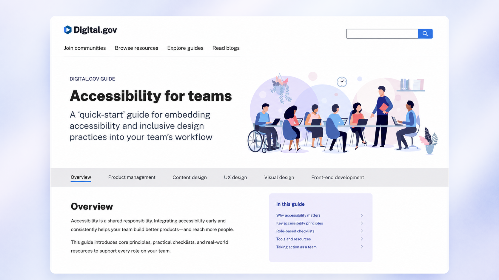

U.S. Web Design System
100+ agencies · 1B+ page views annually
Built core components and helped shape long-term system architecture designed for durability across the federal government.
Explore USWDSDesign systems · Design technology · AI
I design and lead systems that shape how teams build, decide, and scale products. From launching the U.S. Web Design System to enterprise platforms, my work turns design systems into operational infrastructure across complex organizations.
01 / Selected work
100+ agencies · 1B+ page views annually
Built core components and helped shape long-term system architecture designed for durability across the federal government.
Explore USWDS
Lead, foundations & system architecture
Component architecture, token systems, and contribution models spanning 30+ product teams.
Case study available upon request
5 practice areas · Cross-functional adoption
Operationalized inclusive design across design, engineering, and product through role-based guidance.
View the guide02 / About
Design systems aren’t just UI. They’re decision-making systems. They shape how design decisions get made, translated into code, and repeated across a product.
I work at the intersection of design and engineering, building the structures that determine how products get made. I’m particularly interested in what happens as AI becomes part of that process: how systems can carry more of the context, constraints, and intent needed to produce work that actually holds up.
Architecture & long-term strategy
Audits & system evolution
Patterns for complex products
Semantic tokens & component APIs
Design-to-code translation
Production fidelity
Contribution models
Documentation strategy
Enablement across product teams
Agent-constrained design logic
Design-to-code pipelines
Explicit, traceable design intent
03 / Writing
View all writingI set out to build a fifteen-minute countdown. The data source had stopped telling the truth six years earlier, and nothing in the response said so.
A practical workflow for going from greenfield ideas to production-ready UI with AI, design.md, and MCP.
Making the relationships, constraints, and design intent behind a system explicit and machine-readable.
04 / Speaking